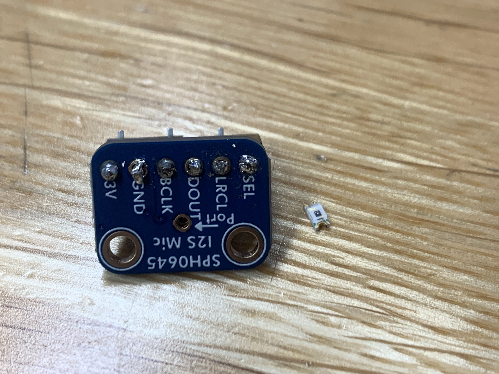
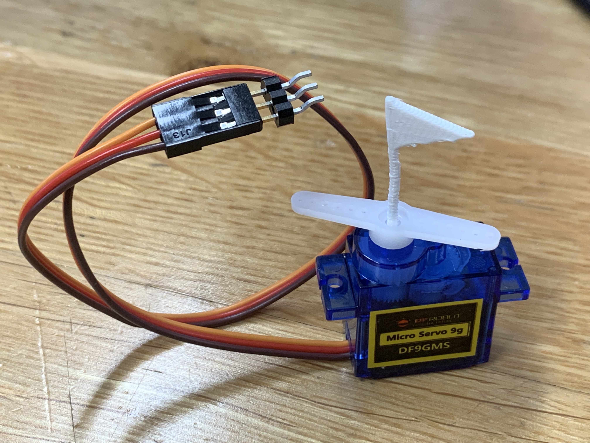
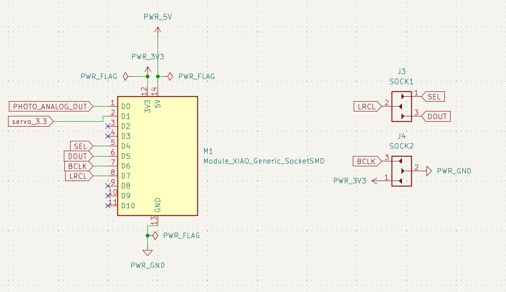
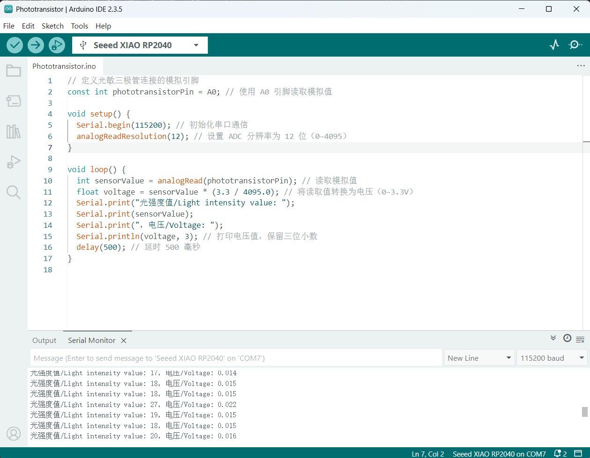
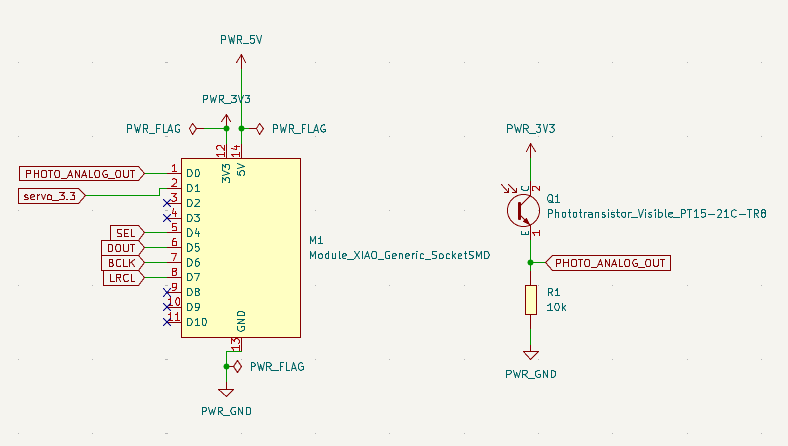
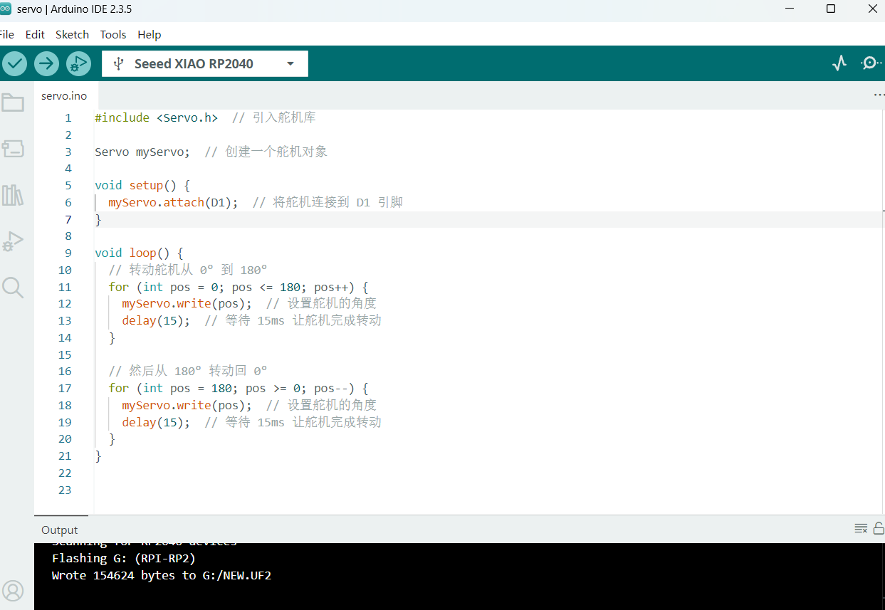
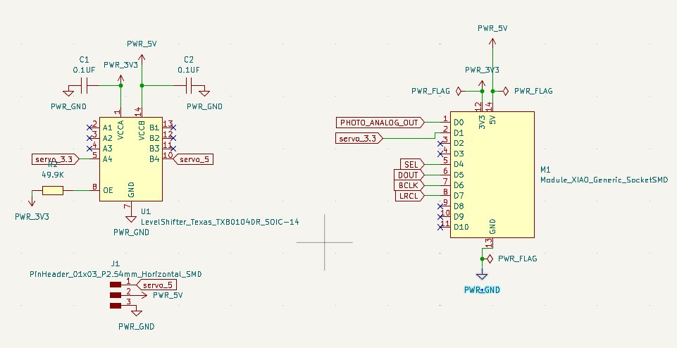
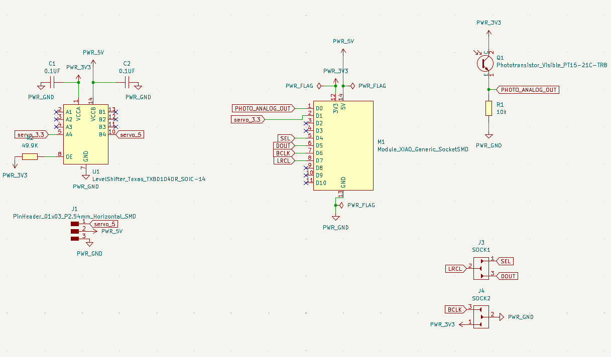
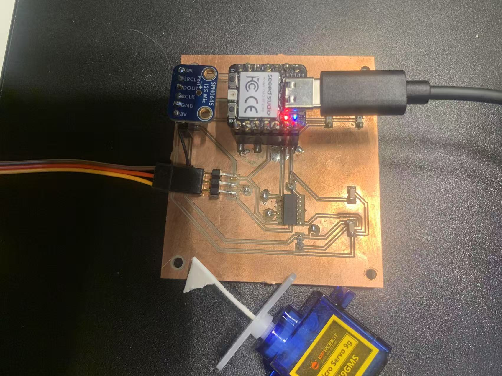

Input and Output Devices
I choose an SPH0645 Microphone and phototransistor Everlight Electronics Co Ltd PT15-21C/TR8 as input device, choose a servo motor as output device.
I use microphone collect the volume data and measure the sound level in the environment, then use the volume level control the speed and rotation of the servo motor. The louder the sound, the faster the servo will rotate.
I use phototransistor collect the brightness and measure the brightness level in the environment, then use the brightness level control rotation angle of the servo motor. The brighter the light, the more the servo will rotate.
My input devices: Microphone and phototransistor.

My output device: Servo.

Input Device
First, I install Adafruit Zero I2S Library in Tools->Manage Libraries.
I learn from here, it has a template of I2S that I can directly use. (File -> Examples -> I2S -> I2SInput also can be use as template)

phototransistor Everlight Electronics Co Ltd PT15-21C/TR8
I connect the phototransistor with GND, 3.3V and A0(analog pin), the side with green point connects with analog pin(and resistor+ GND), the other side connects with voltage 3.3.
I use analogRead() to read the value of analog pin, define a name to save the value of analog pin, and then print the reading value in serial monitor. I use analogReadResolution() to set the ADC resolution to 12 bits (0-4095), so that I can caculate the percent of the analog value(light intensity) and convert it to voltage value, then print it out in the serial monitor.


Output Device
I connect the brown line of servo with GND in XIAO RP2040, connect the red line with 5V in XIAO RP2040, connect the orenge line with D1(digital pin) in XIAO RP2040.
In setting part, I include Servo.h library to use drive the servo, (then create a servo instance.) And I use attach() to connect the servo with analog pin. In main operation code part, I use time as input to drive the rotation of servo, which is rotating 1 degree per millisecond. myServo.write() are used as output as rotation, the number define the angle of the servo head.


Working Example 01
Working Example 02

